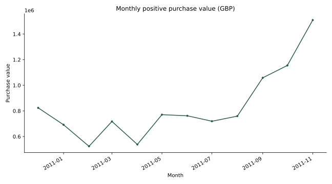
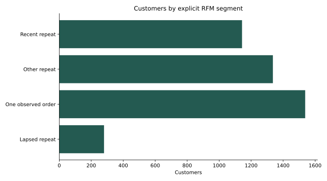
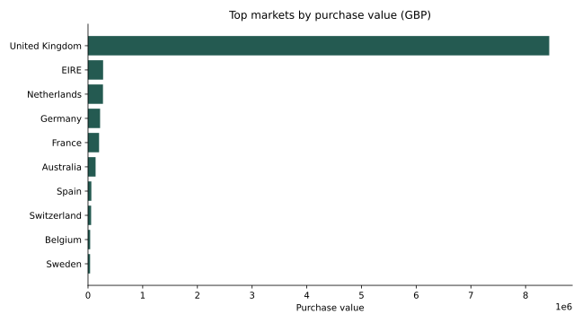

DANIEL UMEADI · PYTHON
Retail sales and retention
Results
Positive purchase value totals £10,027,892; signed value at positive prices is £9,336,204. 4,297 identified customers are available for retention analysis. Weighted month-one retention is 23.7%. Unidentified customers account for 16.3% of purchase value.
Recommended next step
Review lapsed repeat customers for a measured reactivation test. Use product and country concentration to prioritize investigation; check margins before offering discounts.
Scope and limits
UCI Online Retail, December 2010–November 2011. December 2011 is incomplete and excluded. Purchase value is not profit. Negative quantities and cancellation invoices are excluded from purchases; signed totals retain negative quantities at positive prices. Identical lines are retained because there is no line-level ID. Missing customer IDs remain in sales totals but not retention. Cohorts measure first observed purchase, not verified acquisition. Future cohort months are excluded; observed months without activity are zero.



Monthly — results table
| month | purchase_value | orders | signed_value | average_order_value | growth_rate |
|---|---|---|---|---|---|
| 2010-12-01 | 823,746.140 | 1559 | 748,957.020 | 528.381 | NaN |
| 2011-01-01 | 691,364.560 | 1086 | 560,000.260 | 636.616 | -0.161 |
| 2011-02-01 | 523,631.890 | 1100 | 498,062.650 | 476.029 | -0.243 |
| 2011-03-01 | 717,639.360 | 1454 | 683,267.080 | 493.562 | 0.371 |
| 2011-04-01 | 537,808.621 | 1246 | 493,207.121 | 431.628 | -0.251 |
| 2011-05-01 | 770,536.020 | 1681 | 723,333.510 | 458.380 | 0.433 |
| 2011-06-01 | 761,739.900 | 1533 | 691,123.120 | 496.895 | -0.011 |
| 2011-07-01 | 719,221.191 | 1475 | 681,300.111 | 487.608 | -0.056 |
| 2011-08-01 | 759,138.380 | 1361 | 704,804.630 | 557.780 | 0.056 |
| 2011-09-01 | 1,058,590.172 | 1837 | 1,019,687.622 | 576.260 | 0.394 |
| 2011-10-01 | 1,154,979.300 | 2040 | 1,070,704.670 | 566.166 | 0.091 |
| 2011-11-01 | 1,509,496.330 | 2769 | 1,461,756.250 | 545.141 | 0.307 |
Cohorts — results table
| cohort | age_month | cohort_size | active_customers | retention |
|---|---|---|---|---|
| 2010-12-01 | 0 | 885 | 885 | 1.000 |
| 2010-12-01 | 1 | 885 | 324 | 0.366 |
| 2010-12-01 | 2 | 885 | 286 | 0.323 |
| 2010-12-01 | 3 | 885 | 340 | 0.384 |
| 2010-12-01 | 4 | 885 | 321 | 0.363 |
| 2010-12-01 | 5 | 885 | 352 | 0.398 |
| 2010-12-01 | 6 | 885 | 321 | 0.363 |
| 2010-12-01 | 7 | 885 | 309 | 0.349 |
| 2010-12-01 | 8 | 885 | 313 | 0.354 |
| 2010-12-01 | 9 | 885 | 350 | 0.395 |
| 2010-12-01 | 10 | 885 | 331 | 0.374 |
| 2010-12-01 | 11 | 885 | 445 | 0.503 |
| 2011-01-01 | 0 | 417 | 417 | 1.000 |
| 2011-01-01 | 1 | 417 | 92 | 0.221 |
| 2011-01-01 | 2 | 417 | 111 | 0.266 |
Segments — results table
| segment | customers | purchase_value |
|---|---|---|
| Recent repeat | 1143 | 5,663,850.971 |
| Other repeat | 1336 | 1,648,300.202 |
| One observed order | 1538 | 631,751.511 |
| Lapsed repeat | 280 | 449,312.430 |
Products — results table
| StockCode | purchase_value | units | orders | value_share | cumulative_share |
|---|---|---|---|---|---|
| DOT | 186,376.080 | 690 | 690 | 0.019 | 0.019 |
| 22423 | 168,477.870 | 13429 | 1929 | 0.017 | 0.035 |
| 85123A | 102,292.390 | 36845 | 2132 | 0.010 | 0.046 |
| 47566 | 98,585.850 | 18159 | 1657 | 0.010 | 0.055 |
| 85099B | 92,113.150 | 47369 | 2036 | 0.009 | 0.065 |
| 23166 | 81,448.210 | 77826 | 233 | 0.008 | 0.073 |
| M | 77,672.170 | 6405 | 281 | 0.008 | 0.080 |
| POST | 75,336.590 | 3026 | 1076 | 0.008 | 0.088 |
| 22086 | 58,081.580 | 17266 | 1044 | 0.006 | 0.094 |
| 23084 | 57,321.970 | 26477 | 867 | 0.006 | 0.099 |
| 84879 | 56,932.190 | 35131 | 1408 | 0.006 | 0.105 |
| 79321 | 51,478.020 | 9844 | 630 | 0.005 | 0.110 |
| 22502 | 51,426.620 | 1940 | 463 | 0.005 | 0.115 |
| 22197 | 45,930.220 | 50704 | 1328 | 0.005 | 0.120 |
| 23298 | 42,417.970 | 8335 | 1111 | 0.004 | 0.124 |
Countries — results table
| country | purchase_value | orders |
|---|---|---|
| United Kingdom | 8,432,599.994 | 17273 |
| EIRE | 276,113.070 | 278 |
| Netherlands | 273,718.320 | 91 |
| Germany | 220,882.970 | 440 |
| France | 202,438.190 | 374 |
| Australia | 138,521.310 | 57 |
| Spain | 61,260.900 | 88 |
| Switzerland | 57,089.900 | 54 |
| Belgium | 39,778.610 | 94 |
| Sweden | 38,140.330 | 35 |
| Japan | 37,416.370 | 19 |
| Norway | 33,379.740 | 33 |
| Portugal | 30,938.910 | 54 |
| Finland | 21,313.320 | 38 |
| Singapore | 21,279.290 | 7 |
Quality — results table
| source_rows | window_rows | purchase_rows | customers | duplicate_source_lines_retained | unidentified_value_share |
|---|---|---|---|---|---|
| 541909 | 516384 | 504993 | 4297 | 5268 | 0.163 |